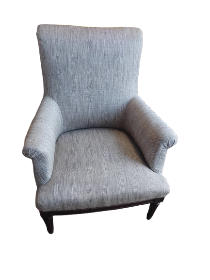

Nos prestations
L'Atelier d'Annie propose un ensemble de services de tapisserie d'ameublement, de rénovation et de sellerie, réalisés avec soin et savoir-faire artisanal.

Tapissier d'ameublement
Réfection complète de fauteuils, canapés et sièges : choix du tissu, garnissage et finitions sur-mesure.

Rénovation & restauration
Restauration de meubles anciens dans le respect de leur structure d'origine, pour leur offrir une seconde vie.

Banquettes médicales & sellerie
Réfection de banquettes médicales, sellerie auto/moto/quad et réfection de matelas en laine.